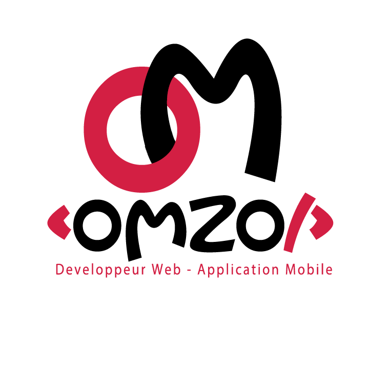

<ion-content padding>
  <ion-icon class="logo">
    
  </ion-icon>
<div class="trip" align="center">
  <svg class="svg svg-section" viewBox="0 0 100 100" preserveAspectRatio="none">
    <path d="M0 100 C 20 0 50 0 100 100 Z"></path>
  </svg>
  <div class="contenu">

    <h2>Omar MBAYE</h2>
      <p>Developpeur web et Mobile  </p>

    <blockquote>Le codage ma passion alors j'en fait mon Métier !</blockquote>

  </div>
</div>
  <div class="nav">
    <button ion-button block (click)="showaccueil()" style="font-size: 29px; height: 48px; background-color: #e85252;">Naviguer</button>
  </div>

</ion-content>
